chapter: 4 可視化(1)：ggplot2によるグラフ作成
Rを使用することの大きなメリットの一つが多彩なグラフィック機能です。グラフなどを用いて、データを可視化することで自分の分析対象をより深く理解できるようになります。
4.1 可視化の重要性
はじめにサンプルデータを用いて、可視化の持つ意味について考えます。
## x1 x2 x3 x4 y1 y2 y3 y4
## 1 10 10 10 8 8.0 9.1 7.5 6.6
## 2 8 8 8 8 7.0 8.1 6.8 5.8
## 3 13 13 13 8 7.6 8.7 12.7 7.7
## 4 9 9 9 8 8.8 8.8 7.1 8.8
## 5 11 11 11 8 8.3 9.3 7.8 8.5
## 6 14 14 14 8 10.0 8.1 8.8 7.0
## 7 6 6 6 8 7.2 6.1 6.1 5.2
## 8 4 4 4 19 4.3 3.1 5.4 12.5
## 9 12 12 12 8 10.8 9.1 8.2 5.6
## 10 7 7 7 8 4.8 7.3 6.4 7.9
## 11 5 5 5 8 5.7 4.7 5.7 6.9このデータ例は、統計学者のフランク・アンスコムが1973年に紹介した例です。この例では、\(x\) の平均(=mean)は\(9\)、\(x\) の標準偏差(=sd)は\(3.32\)、\(y\)の平均が\(7.50\) (小数第2位まで一致)、\(y\)の標準偏差が \(2.03\) (小数第3位まで一致)、と等しくなっています。
# 記述統計を出力するためのpackage
# include.packages("psych)
library(psych)
descriptive_statistics<-describe(anscombe,skew = FALSE, ranges = FALSE)
print(descriptive_statistics)## vars n mean sd se
## x1 1 11 9.0 3.3 1.00
## x2 2 11 9.0 3.3 1.00
## x3 3 11 9.0 3.3 1.00
## x4 4 11 9.0 3.3 1.00
## y1 5 11 7.5 2.0 0.61
## y2 6 11 7.5 2.0 0.61
## y3 7 11 7.5 2.0 0.61
## y4 8 11 7.5 2.0 0.61また、\(x_i\)と\(y_i\)の間の相関係数も少数第３位で四捨五入して\(0.82\)と一致しています。
\[ r = \frac{\frac{1}{n}\sum_{i=1}^{n}(x_{i}-\overline{x})(y_{i}-\overline{y})}{\sqrt{\frac{1}{n}\sum_{i=1}^{n}(x_{i}-\overline{x})^{2}}\sqrt{\frac{1}{n}\sum_{i=1}^{n}(y_{i}-\overline{y})^{2}}} = \frac{s_{xy}}{s_{x}s_{y}} \]
#x1とy1の相関係数
x1y1<-cor(anscombe$x1,anscombe$y1)
x2y2<-cor(anscombe$x2,anscombe$y2)
x3y3<-cor(anscombe$x3,anscombe$y3)
x4y4<-cor(anscombe$x4,anscombe$y4)
options(digits=2) # 表示桁数を小数点第２位までに変える
print(c(x1y1,x2y2,x3y3,x4y4))## [1] 0.82 0.82 0.82 0.82ところが、このデータをプロットしてみると以下のようになります (描画に用いたggplot2の解説はこの後に行います)。
# 4組のグラフを作成する
plotx1y1<-ggplot(anscombe)+geom_point(aes(x=x1,y=y1),size=3)+
xlim(2.5,20)+ylim(2.5,12.9)+ggtitle("Set 1")
plotx2y2<-ggplot(anscombe)+geom_point(aes(x=x2,y=y2),size=3)+
xlim(2.5,20)+ylim(2.5,12.9)+ggtitle("Set 2")
plotx3y3<-ggplot(anscombe)+geom_point(aes(x=x3,y=y3),size=3)+
xlim(2.5,20)+ylim(2.5,12.9)+ggtitle("Set 3")
plotx4y4<-ggplot(anscombe)+geom_point(aes(x=x4,y=y4),size=3)+
xlim(2.5,20)+ylim(2.5,12.9)+ggtitle("Set 4")
# このpackageでグラフを組み合わせる
#install.packages("patchwork")
library(patchwork)
plotx1y1 + plotx2y2 +plotx3y3+plotx4y4+
plot_layout(ncol = 2, heights = c(5, 4))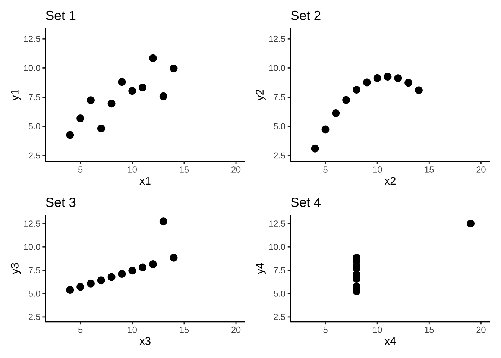
このように全く異なるデータの分布をしていることがわかります。要約統計量だけをみて判断せずに常にグラフにデータをプロットしてみることが重要です。
4.2 Rによる可視化のデモ
コマンドラインで図を作成することははじめは面倒に思うかもしれません。しかし、どのようなグラフを作成するかを一つ一つ命令に書きますので、一度作成してしまえばコピーペーストで簡単に複製することができます。ところがクリックベースでグラフを作成した場合、完成したグラフをコピーしたとしても必ずしも元のグラフと同じにはなりません。ズレた場合にも目測で直す必要があります。
Rによる可視化の例を公式デモにて確認します。
##
##
## demo(graphics)
## ---- ~~~~~~~~
##
## > # Copyright (C) 1997-2009 The R Core Team
## >
## > require(datasets)
##
## > require(grDevices); require(graphics)
##
## > ## Here is some code which illustrates some of the differences between
## > ## R and S graphics capabilities. Note that colors are generally specified
## > ## by a character string name (taken from the X11 rgb.txt file) and that line
## > ## textures are given similarly. The parameter "bg" sets the background
## > ## parameter for the plot and there is also an "fg" parameter which sets
## > ## the foreground color.
## >
## >
## > x <- stats::rnorm(50)
##
## > opar <- par(bg = "white")
##
## > plot(x, ann = FALSE, type = "n")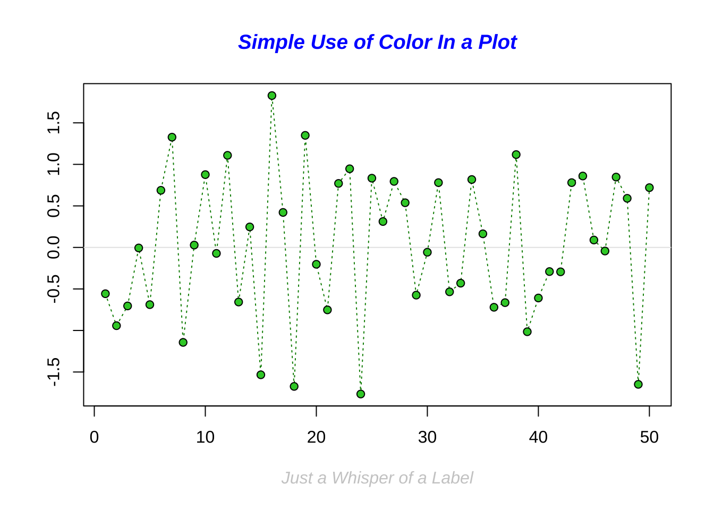
##
## > abline(h = 0, col = gray(.90))
##
## > lines(x, col = "green4", lty = "dotted")
##
## > points(x, bg = "limegreen", pch = 21)
##
## > title(main = "Simple Use of Color In a Plot",
## + xlab = "Just a Whisper of a Label",
## + col.main = "blue", col.lab = gray(.8),
## + cex.main = 1.2, cex.lab = 1.0, font.main = 4, font.lab = 3)
##
## > ## A little color wheel. This code just plots equally spaced hues in
## > ## a pie chart. If you have a cheap SVGA monitor (like me) you will
## > ## probably find that numerically equispaced does not mean visually
## > ## equispaced. On my display at home, these colors tend to cluster at
## > ## the RGB primaries. On the other hand on the SGI Indy at work the
## > ## effect is near perfect.
## >
## > par(bg = "gray")
##
## > pie(rep(1,24), col = rainbow(24), radius = 0.9)##
## > title(main = "A Sample Color Wheel", cex.main = 1.4, font.main = 3)
##
## > title(xlab = "(Use this as a test of monitor linearity)",
## + cex.lab = 0.8, font.lab = 3)
##
## > ## We have already confessed to having these. This is just showing off X11
## > ## color names (and the example (from the postscript manual) is pretty "cute".
## >
## > pie.sales <- c(0.12, 0.3, 0.26, 0.16, 0.04, 0.12)
##
## > names(pie.sales) <- c("Blueberry", "Cherry",
## + "Apple", "Boston Cream", "Other", "Vanilla Cream")
##
## > pie(pie.sales,
## + col = c("purple","violetred1","green3","cornsilk","cyan","white"))##
## > title(main = "January Pie Sales", cex.main = 1.8, font.main = 1)
##
## > title(xlab = "(Don't try this at home kids)", cex.lab = 0.8, font.lab = 3)
##
## > ## Boxplots: I couldn't resist the capability for filling the "box".
## > ## The use of color seems like a useful addition, it focuses attention
## > ## on the central bulk of the data.
## >
## > par(bg="cornsilk")
##
## > n <- 10
##
## > g <- gl(n, 100, n*100)
##
## > x <- rnorm(n*100) + sqrt(as.numeric(g))
##
## > boxplot(split(x,g), col="lavender", notch=TRUE)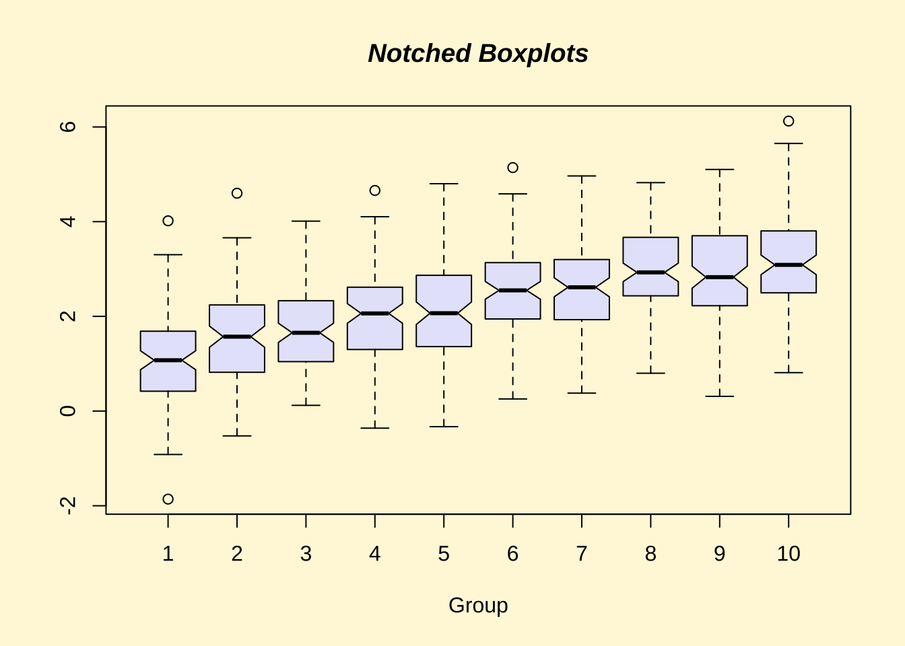
##
## > title(main="Notched Boxplots", xlab="Group", font.main=4, font.lab=1)
##
## > ## An example showing how to fill between curves.
## >
## > par(bg="white")
##
## > n <- 100
##
## > x <- c(0,cumsum(rnorm(n)))
##
## > y <- c(0,cumsum(rnorm(n)))
##
## > xx <- c(0:n, n:0)
##
## > yy <- c(x, rev(y))
##
## > plot(xx, yy, type="n", xlab="Time", ylab="Distance")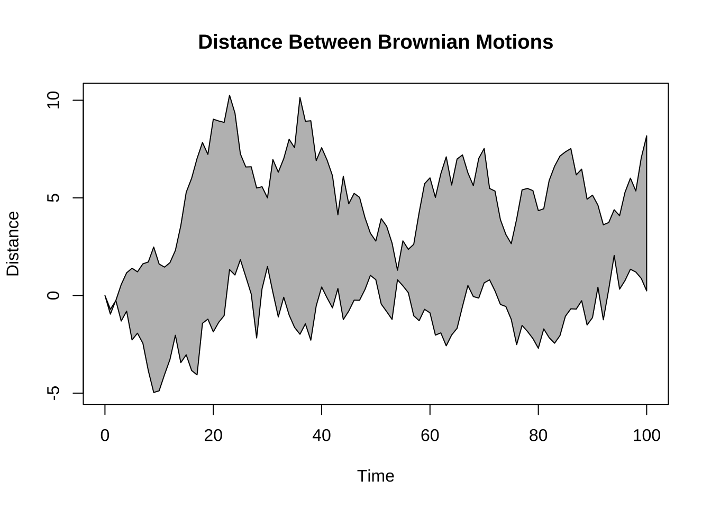
##
## > polygon(xx, yy, col="gray")
##
## > title("Distance Between Brownian Motions")
##
## > ## Colored plot margins, axis labels and titles. You do need to be
## > ## careful with these kinds of effects. It's easy to go completely
## > ## over the top and you can end up with your lunch all over the keyboard.
## > ## On the other hand, my market research clients love it.
## >
## > x <- c(0.00, 0.40, 0.86, 0.85, 0.69, 0.48, 0.54, 1.09, 1.11, 1.73, 2.05, 2.02)
##
## > par(bg="lightgray")
##
## > plot(x, type="n", axes=FALSE, ann=FALSE)##
## > usr <- par("usr")
##
## > rect(usr[1], usr[3], usr[2], usr[4], col="cornsilk", border="black")
##
## > lines(x, col="blue")
##
## > points(x, pch=21, bg="lightcyan", cex=1.25)
##
## > axis(2, col.axis="blue", las=1)
##
## > axis(1, at=1:12, lab=month.abb, col.axis="blue")
##
## > box()
##
## > title(main= "The Level of Interest in R", font.main=4, col.main="red")
##
## > title(xlab= "1996", col.lab="red")
##
## > ## A filled histogram, showing how to change the font used for the
## > ## main title without changing the other annotation.
## >
## > par(bg="cornsilk")
##
## > x <- rnorm(1000)
##
## > hist(x, xlim=range(-4, 4, x), col="lavender", main="")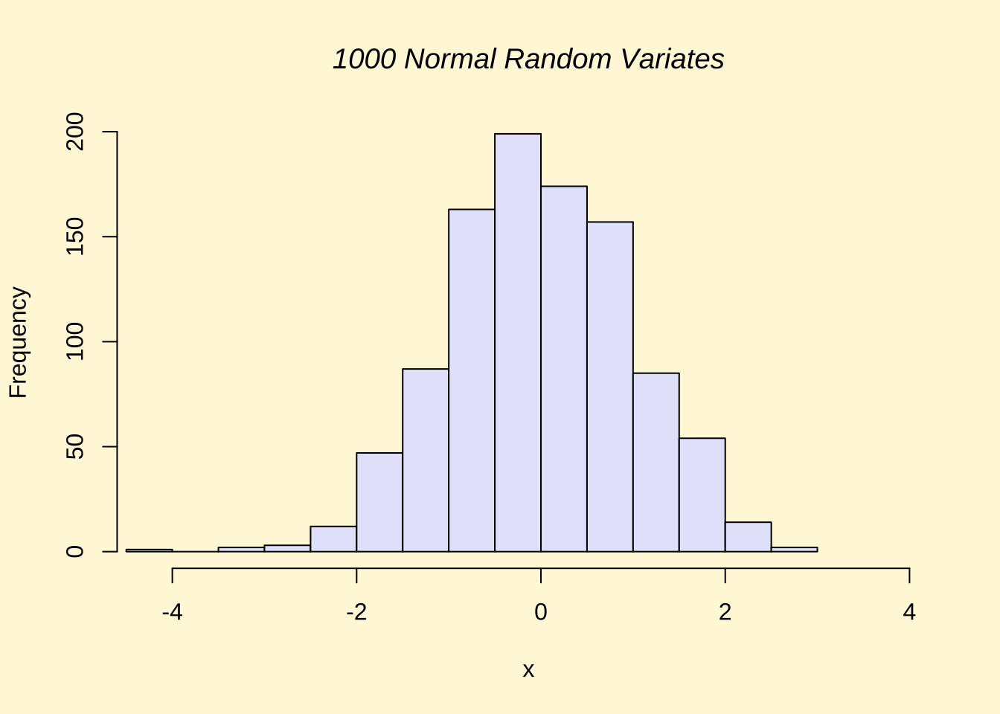
##
## > title(main="1000 Normal Random Variates", font.main=3)
##
## > ## A scatterplot matrix
## > ## The good old Iris data (yet again)
## >
## > pairs(iris[1:4], main="Edgar Anderson's Iris Data", font.main=4, pch=19)##
## > pairs(iris[1:4], main="Edgar Anderson's Iris Data", pch=21,
## + bg = c("red", "green3", "blue")[unclass(iris$Species)])##
## > ## Contour plotting
## > ## This produces a topographic map of one of Auckland's many volcanic "peaks".
## >
## > x <- 10*1:nrow(volcano)
##
## > y <- 10*1:ncol(volcano)
##
## > lev <- pretty(range(volcano), 10)
##
## > par(bg = "lightcyan")
##
## > pin <- par("pin")
##
## > xdelta <- diff(range(x))
##
## > ydelta <- diff(range(y))
##
## > xscale <- pin[1]/xdelta
##
## > yscale <- pin[2]/ydelta
##
## > scale <- min(xscale, yscale)
##
## > xadd <- 0.5*(pin[1]/scale - xdelta)
##
## > yadd <- 0.5*(pin[2]/scale - ydelta)
##
## > plot(numeric(0), numeric(0),
## + xlim = range(x)+c(-1,1)*xadd, ylim = range(y)+c(-1,1)*yadd,
## + type = "n", ann = FALSE)##
## > usr <- par("usr")
##
## > rect(usr[1], usr[3], usr[2], usr[4], col="green3")
##
## > contour(x, y, volcano, levels = lev, col="yellow", lty="solid", add=TRUE)
##
## > box()
##
## > title("A Topographic Map of Maunga Whau", font= 4)
##
## > title(xlab = "Meters North", ylab = "Meters West", font= 3)
##
## > mtext("10 Meter Contour Spacing", side=3, line=0.35, outer=FALSE,
## + at = mean(par("usr")[1:2]), cex=0.7, font=3)
##
## > ## Conditioning plots
## >
## > par(bg="cornsilk")
##
## > coplot(lat ~ long | depth, data = quakes, pch = 21, bg = "green3")##
## > par(opar)4.3 ggplot2の考え方
ggplot2は、Rの中で最もポピュラーな描画packageです。最初は戸惑うかもしれませんが、論理でグラフを作る面白さを一緒に体験しましょう。
ggplot2はグラフを特定のパーツに分けてレイヤーとして作成し、それらを重ねて表現していきます。コマンドとしてはそれぞれのレイヤーを「足し算する」形でグラフを完成していきます。
下の例は最初のコマンドで、ggplot(A,aes(x=B,y=C))で、Aというデータセットを使って、x軸にB、y軸にCを使うグラフの基礎となるレイヤーを作ってね、という命令になります。
## # A tibble: 6 × 28
## PID county state area poptotal popdensity popwhite popblack popamerindian popasian popother
## <int> <chr> <chr> <dbl> <int> <dbl> <int> <int> <int> <int> <int>
## 1 561 ADAMS IL 0.052 66090 1271. 63917 1702 98 249 124
## 2 562 ALEXA… IL 0.014 10626 759 7054 3496 19 48 9
## 3 563 BOND IL 0.022 14991 681. 14477 429 35 16 34
## 4 564 BOONE IL 0.017 30806 1812. 29344 127 46 150 1139
## 5 565 BROWN IL 0.018 5836 324. 5264 547 14 5 6
## 6 566 BUREAU IL 0.05 35688 714. 35157 50 65 195 221
## # ℹ 17 more variables: percwhite <dbl>, percblack <dbl>, percamerindan <dbl>, percasian <dbl>,
## # percother <dbl>, popadults <int>, perchsd <dbl>, percollege <dbl>, percprof <dbl>,
## # poppovertyknown <int>, percpovertyknown <dbl>, percbelowpoverty <dbl>,
## # percchildbelowpovert <dbl>, percadultpoverty <dbl>, percelderlypoverty <dbl>,
## # inmetro <int>, category <chr>midewestはggplot2に付属しているデータベースで、アメリカ中西部の５つの州(IL, IN, MI, OH,WI)のサンプルデータが保存してあります。
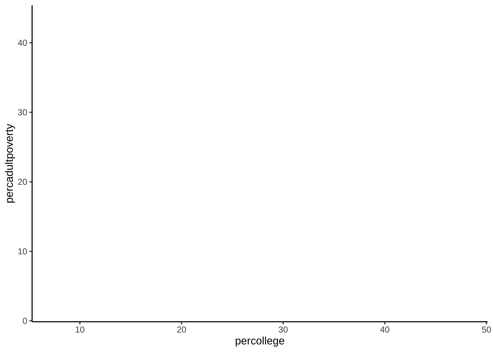
結果は上記のようになります。この例では、横軸が各カウンティの大卒割合、縦軸が、貧困割合を示しています。
データそのものは、どうやってプロットするか、を命令しないと描かれません。どうやってとは、棒グラフにするのか、折れ線グラフにするのか、円グラフにするのか、といった見た目の問題です。このどうやっての部分は、geom_XXX()という関数群で指定します。例えば、散布図を作成する場合は、geom_point()となります。
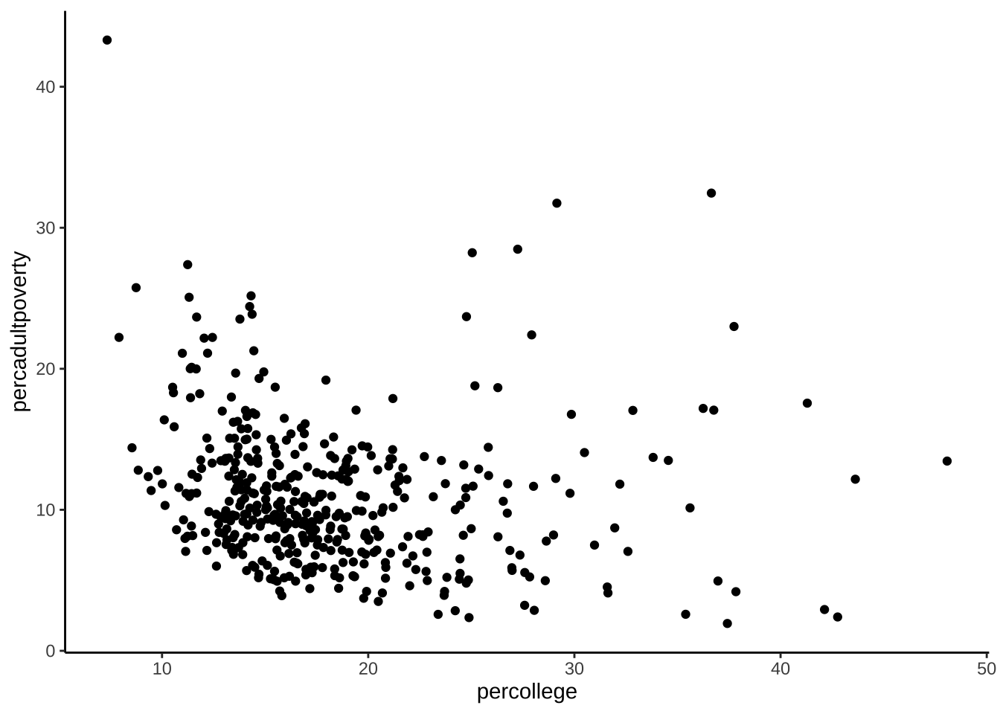
デフォルトでは、軸の名称に変数の名前が入るので、これをわかりやすい文言に変更してみましょう。また、タイトルも加えてみます。
ggplot(data=midwest)+
geom_point(aes(x=percollege,y=percadultpoverty))+
theme_gray (base_family = "HiraKakuPro-W3")+ # 日本語表示のために必要
xlab("各カウンティにおける大卒の割合 (%)")+
ylab("貧困の割合 (%)")+
ggtitle("アメリカ中西部５州の現状")+theme_bw()geom_point()のaes()でcolor=XXXと設定することでXXX変数を用いて色分けをすることができます。stateという変数で州の名前が格納されているので、この情報を使って州別に色分けしてみましょう。
ggplot(data=midwest)+
geom_point(aes(x=percollege,y=percadultpoverty,color=state))+
theme_gray (base_family = "HiraKakuPro-W3")+ # 日本語表示のために必要
xlab("各カウンティにおける大卒の割合 (%)")+
ylab("貧困の割合 (%)")+
ggtitle("アメリカ中西部５州の現状")+theme_bw()あるいはfacet_grid()関数で州別に分割することも可能です。
# 横方向への分割
ggplot(data=midwest)+
geom_point(aes(x=percollege,y=percadultpoverty))+
facet_grid(. ~ state)+ # stateでグラフを分割 (横方向)
theme_gray (base_family = "HiraKakuPro-W3")+ # 日本語表示のために必要
xlab("各カウンティにおける大卒の割合 (%)")+
ylab("貧困の割合 (%)")+
ggtitle("アメリカ中西部５州の現状")+theme_bw()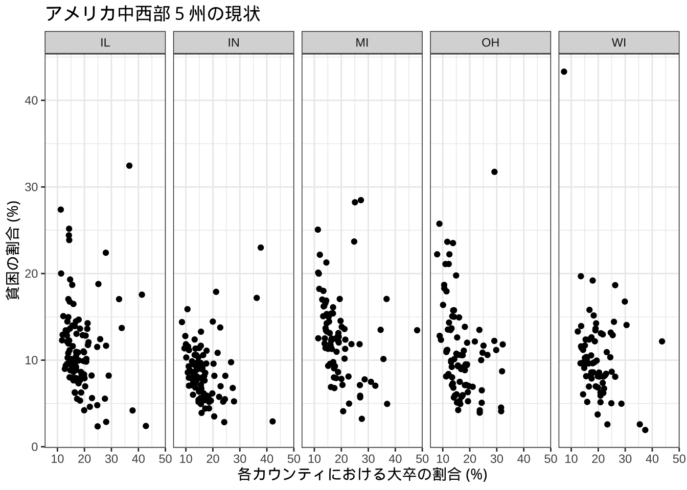
# 縦方向への分割
ggplot(data=midwest)+
geom_point(aes(x=percollege,y=percadultpoverty))+
facet_grid(state ~.)+ # stateでグラフを分割 (縦方向)
theme_gray (base_family = "HiraKakuPro-W3")+ # 日本語表示のために必要
xlab("各カウンティにおける大卒の割合 (%)")+
ylab("貧困の割合 (%)")+
ggtitle("アメリカ中西部５州の現状")+theme_bw()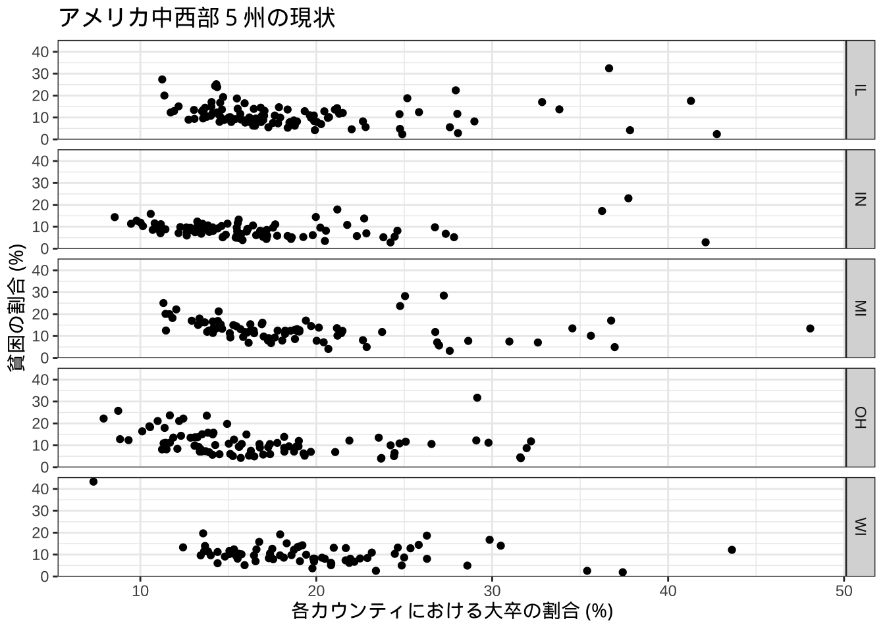
代表的なgeom_XXX関数は以下の通りです。
| 関数名 | 内容 |
|---|---|
geom_point() |
散布図のように点を描画 |
geom_line() |
折れ線グラフを描画 |
geom_smooth() |
データのトレンド線を描画 |
geom_col() |
棒グラフの描画 |
geom_polygon() |
長方形など任意の形状のオブジェクトの描画 |
geom_sf() |
空間情報を持つオブジェクトの描画 |
例えば、棒グラフは以下のように描写できる。
ggplot(midwest)+
geom_col(aes(x=state,y=poptotal))+
theme_gray (base_family = "HiraKakuPro-W3")+ # 日本語表示のために必要
xlab("州名")+ylab("州全体の人口")+theme_bw()データでは、各州のカウンティレベルでの人口が入っているが自動的に合計されていることに注意。
人口の軸表示がe+06などとなっていますが、これは学術的な標記で\(10^6\)を意味しています。これをより一般にわかりやすい標記に変更します。
ここでは、scalesというpackageのlabel_number()関数を使って変更していますが、元のデータの単位を変更する(=1,000,000で割るなど)しても同じです。
また、もう一つの機能として軸を入れ替えるcoord_flip()関数も紹介しています。
#install.packages("scales")
library(scales)
ggplot(midwest)+
geom_col(aes(x=state,y=poptotal))+
theme_gray (base_family = "HiraKakuPro-W3")+ # 日本語表示のために必要
scale_y_continuous(labels = label_number(suffix = "", scale = 1e-6))+
xlab("州名")+ylab("州全体の人口 (単位：百万人)")+
coord_flip()+theme_bw()label_number()関数のsuffixというオプションは添字という意味で上の例では空欄としていますが任意の文字列を入れることも可能です。例えば百万を意味するmillionから頭文字をとって、Mを追記することが可能です。
また、fill="XXXでグラフの色を変更しました。aes()の外で設定している点に注意してください。
#install.packages("scales")
library(scales)
ggplot(midwest)+
geom_col(aes(x=state,y=poptotal), fill="royalblue")+
theme_gray (base_family = "HiraKakuPro-W3")+ # 日本語表示のために必要
scale_y_continuous(labels = label_number(suffix = " M", scale = 1e-6))+
xlab("州名")+ylab("州全体の人口")+
coord_flip()+theme_bw()aes()の中でfill=XXXを実行した場合、XXXの値によって色分けをすることができます。以下の例では、inmetroという変数で色分けをしています。この変数は、あるカウンティがmetro areaに属していれば１、そうでなければ０をとる変数です。このような変数をダミー変数と呼びます。metro areaは日本でいう人口密度が一定以上のエリアのことで、いわゆる都市化されているエリアと考えてもらえれば良いと思います。
ggplot(midwest)+
geom_col(aes(x=state,y=poptotal,fill=factor(inmetro)))+
theme_gray (base_family = "HiraKakuPro-W3")+ # 日本語表示のために必要
scale_y_continuous(labels = label_number(suffix = "", scale = 1e-6))+
xlab("州名")+ylab("州全体の人口 (単位：百万人)")+theme_bw()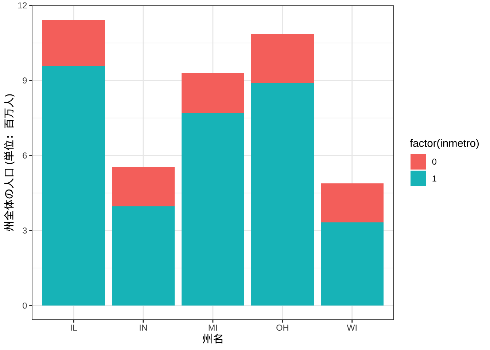
## $fill
## [1] "metro areaダミー"
##
## attr(,"class")
## [1] "labels"ggplot2には数多くの機能があります。そしてこの機能は日々進化しています。もし、グラフをこのように変更したい、というアイディアが何かあったらまずはgoogle検索してみてください。最初は適切な検索ワードが見つけられずに苦労するかもしれませんが、慣れてくるとかなりの確率で答えが見つかると思います。場合によっては、自分がイメージしていた可視化よりも優れたアイディアに出会えることもあると思います。
最終的なアウトプットの完成度を高めることが最初の目標ですが、その後はその過程の効率化にも目を向けてみてください。自分のスタイルを確立することができたら、それに至る時間を短縮するための様々な方法がggplot2あるいはRには用意されています。
4.4 ggplot2の事例
以下は、このサイトから引用した例です。講義では触れませんが、使いたいものがあれば是非試してみてください。
4.4.1 バブルチャート
#Source:http://r-statistics.co/Top50-Ggplot2-Visualizations-MasterList-R-Code.html
data(mpg, package="ggplot2")
# mpg <- read.csv("http://goo.gl/uEeRGu")
mpg_select <- mpg[mpg$manufacturer %in% c("audi", "ford", "honda", "hyundai"), ]
# Scatterplot
theme_set(theme_bw()) # pre-set the bw theme.
g <- ggplot(mpg_select, aes(displ, cty)) +
labs(subtitle="mpg: Displacement vs City Mileage",
title="Bubble chart")
g + geom_jitter(aes(col=manufacturer, size=hwy)) +
geom_smooth(aes(col=manufacturer), method="lm", se=F)## `geom_smooth()` using formula = 'y ~ x'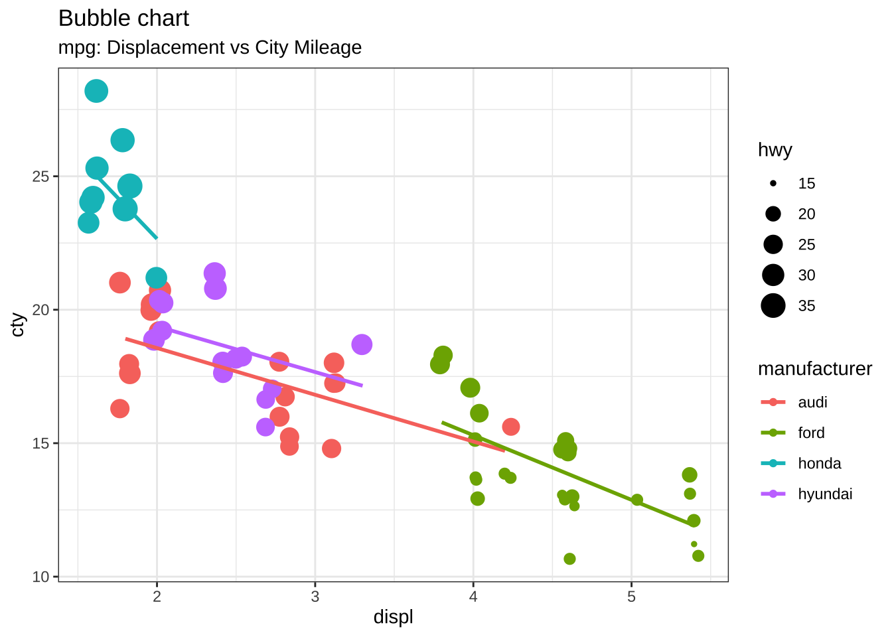
4.4.2 ロリポップチャート
#Source:http://r-statistics.co/Top50-Ggplot2-Visualizations-MasterList-R-Code.html
theme_set(theme_bw())
# Prepare data: group mean city mileage by manufacturer.
cty_mpg <- aggregate(mpg$cty, by=list(mpg$manufacturer), FUN=mean) # aggregate
colnames(cty_mpg) <- c("make", "mileage") # change column names
cty_mpg <- cty_mpg[order(cty_mpg$mileage), ] # sort
cty_mpg$make <- factor(cty_mpg$make, levels = cty_mpg$make) # to retain the order in plot.
head(cty_mpg, 4)## make mileage
## 9 lincoln 11
## 8 land rover 12
## 3 dodge 13
## 10 mercury 134.4.3 ヒストグラム
#Source:http://r-statistics.co/Top50-Ggplot2-Visualizations-MasterList-R-Code.html
theme_set(theme_classic())
# Histogram on a Continuous (Numeric) Variable
g <- ggplot(mpg, aes(displ)) + scale_fill_brewer(palette = "Spectral")
g + geom_histogram(aes(fill=class),
binwidth = .1,
col="black",
size=.1) + # change binwidth
labs(title="Histogram with Auto Binning",
subtitle="Engine Displacement across Vehicle Classes") g + geom_histogram(aes(fill=class),
bins=5,
col="black",
size=.1) + # change number of bins
labs(title="Histogram with Fixed Bins",
subtitle="Engine Displacement across Vehicle Classes") 
4.4.4 ボックスプロット
#Source:http://r-statistics.co/Top50-Ggplot2-Visualizations-MasterList-R-Code.html
theme_set(theme_bw())
# plot
g <- ggplot(mpg, aes(manufacturer, cty))
g + geom_boxplot() +
geom_dotplot(binaxis='y',
stackdir='center',
dotsize = .5,
fill="red") +
theme(axis.text.x = element_text(angle=65, vjust=0.6)) +
labs(title="Box plot + Dot plot",
subtitle="City Mileage vs Class: Each dot represents 1 row in source data",
caption="Source: mpg",
x="Class of Vehicle",
y="City Mileage")## Bin width defaults to 1/30 of the range of the data. Pick better value with `binwidth`.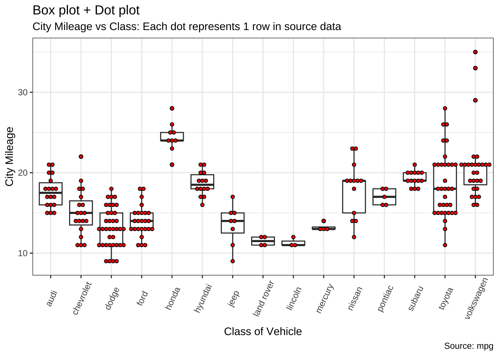
4.4.5 時系列データ
#Source:http://r-statistics.co/Top50-Ggplot2-Visualizations-MasterList-R-Code.html
#install.packages("forecast")
library(forecast)
theme_set(theme_classic())
# Subset data
nottem_small <- window(nottem, start=c(1920, 1), end=c(1925, 12)) # subset a smaller timewindow
# Plot
ggseasonplot(AirPassengers) + labs(title="Seasonal plot: International Airline Passengers")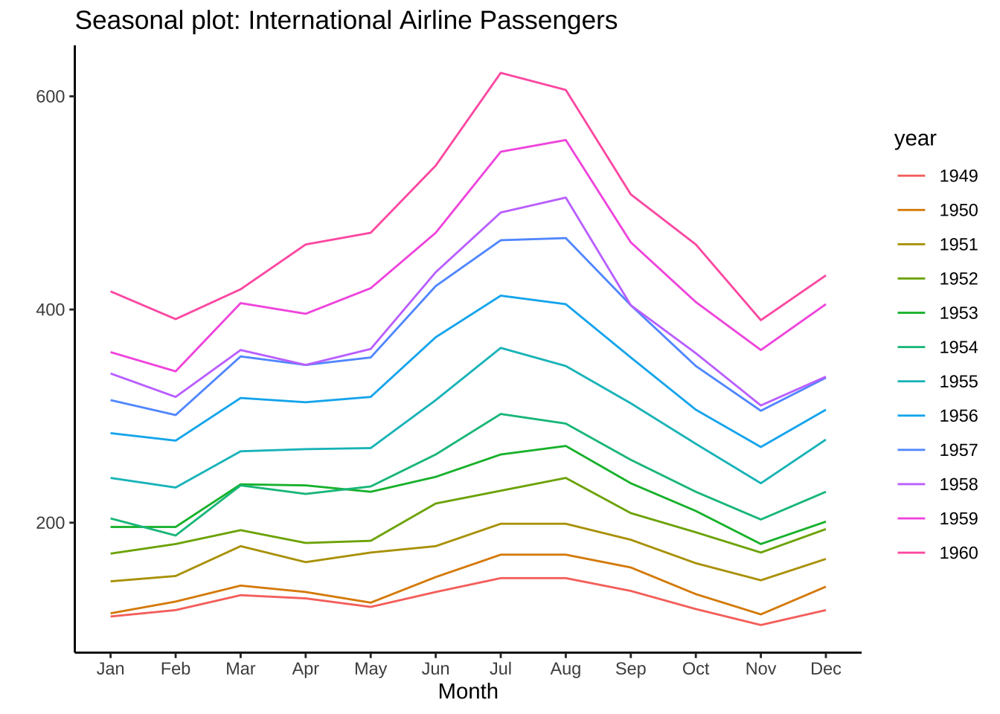
インターネットで検索すると、ggplot2の使い方はたくさん出てきます。以下にまとまって学習できるサイトの例をリンクしておきます。個々の問題もほとんどネットで解決できます。検索のコツをつかむまでが大変ですが、エラーメッセージをコピペして検索することから始めると良いと思います。